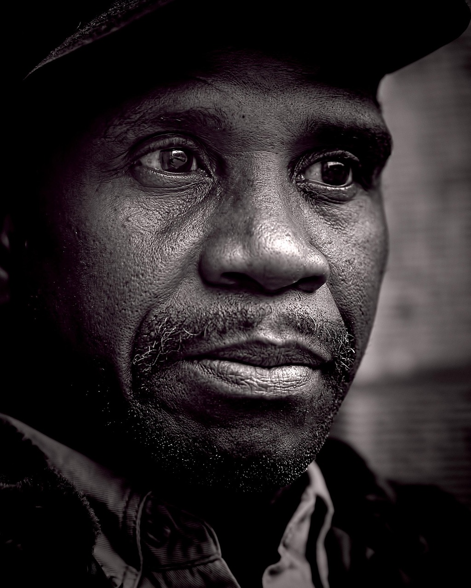
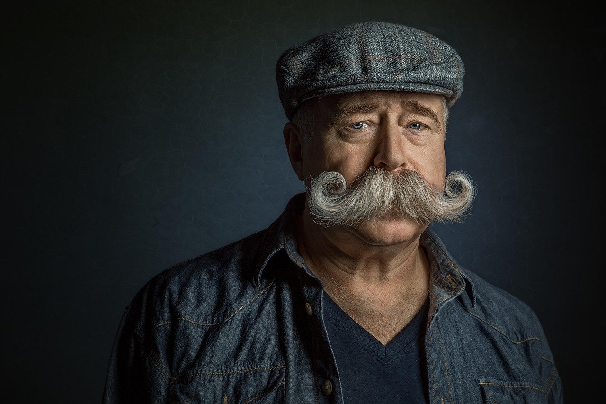
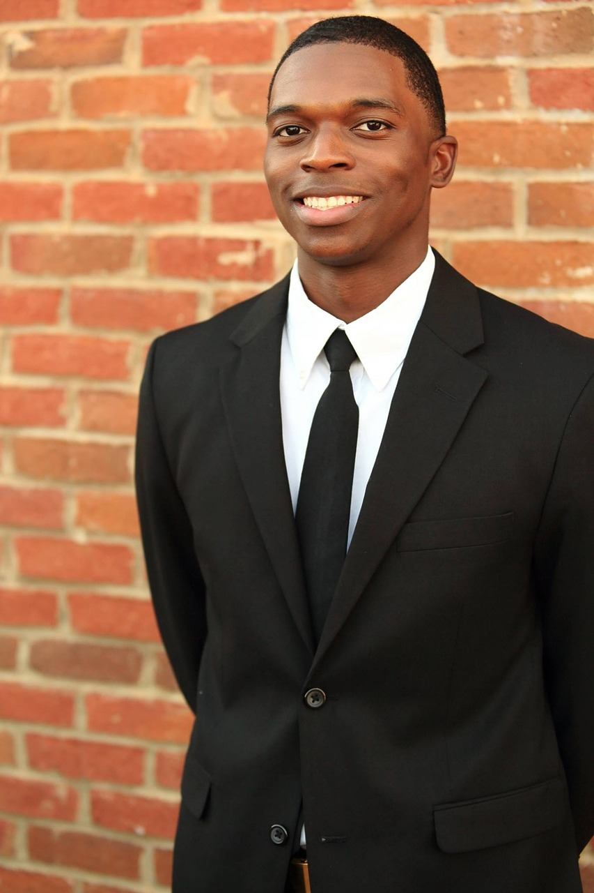

Marie Dupont
Experte en intelligence artificielle
Spécialisée dans les enjeux éthiques de l’IA, elle accompagne les entreprises dans la mise en place de solutions responsables.
Des experts du web et du design engagés pour un numérique plus responsable.
Les intervenants de SIGNAL partagent leurs expériences, leurs visions et leurs bonnes pratiques autour du numérique responsable, de l’accessibilité et de la création web.
Experte en intelligence artificielle
Spécialisée dans les enjeux éthiques de l’IA, elle accompagne les entreprises dans la mise en place de solutions responsables.

Développeur front-end
Expert en accessibilité web, il milite pour un web inclusif et conforme aux standards.
Designer UX/UI
Elle conçoit des interfaces centrées sur l’utilisateur avec une approche inclusive et éthique.

Développeur open source
Contributeur actif à plusieurs projets open source, il promeut la collaboration et le partage de connaissances.
UX Researcher
Elle étudie les comportements utilisateurs pour concevoir des expériences accessibles et inclusives.

Consultant numérique responsable
Il accompagne les organisations dans la réduction de leur impact environnemental numérique.
Vous souhaitez partager votre expertise lors de la prochaine édition de SIGNAL ? Rejoignez-nous et participez à la construction d’un événement engagé et inspirant.
Proposer une intervention